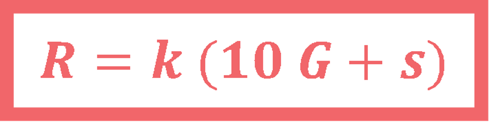
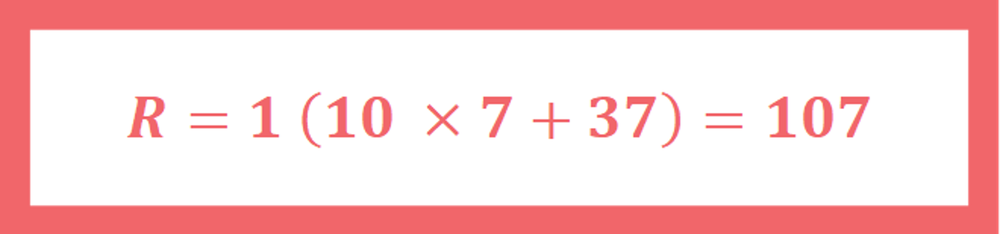
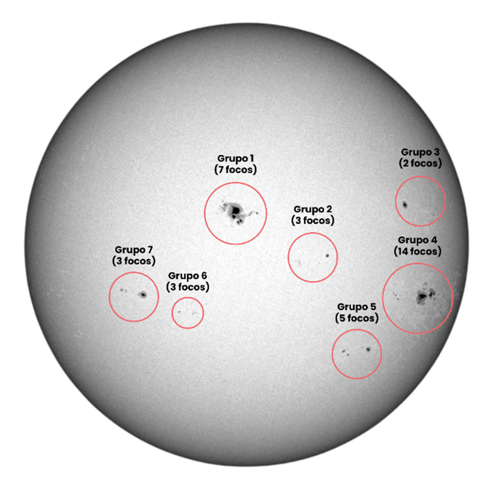

| ÍNDICE DE WOLF | PARÂMETROS |
 |
|
 |
 |
ACTIVIDADE 1 : CALCULA O NÚMERO DE WOLF
Nota : Para poder contar melhor as manchas do Sol clica sobre cada imagem.
| GRUPO 1 | GRUPO 2 | |||||||||||||||||||||||||
| FORMA DE REALIZAR A ACTIVIDADE | Em grupos | Em grupos | ||||||||||||||||||||||||
| OBSERVATÓRIO | Telescopio solar PoET | Satélite SDO | ||||||||||||||||||||||||
| DADOS A UTILIZAR | Conjunto de imagens na banda do visível. | Conjunto de imagens na banda do visível. | ||||||||||||||||||||||||
| CONJUNTO DE IMÁGENES |
|
|
{kind=link}
{kind=link}
{kind=link}
{kind=link}
{kind=link}
{kind=link}
{kind=link}
{kind=link}
{kind=link}
{kind=link}
PERGUNTA:
- O GRUPO 1 e o GRUPO 2 obtêm o mesmo valor de R, o número relativo de manchas solares, para cada imagem?
- Se não, tentem compreender as possíveis razões para as diferenças entre os valores obtidos.
ATIVIDADE 2: REPRESENTA COMO O NÚMERO DE WOLF VARIA AO LONGO DO TEMPO
- Desenha numa folha de papel um sistema de coordenadas:
-
- eixo x (das abcissas): tempo, em anos
- eixo y (das ordenadas): valores de R obtidos na ATIVIDADE 1
- Compara os valores obtidos com os valores previstos pelo modelo: https://www.swpc.noaa.gov/products/solar-cycle-progression
PERGUNTAS:
- Qual ou quais das imagens representam um período de menor atividade solar, ou seja, com um valor mais baixo de R (número de Wolf)?
- Qual ou quais das imagens representam um período de maior atividade solar, ou seja, com um valor mais elevado de R (número de Wolf)
- Observam alguma diferença entre as imagens correspondentes a períodos de maior e menor atividade solar? Qual?